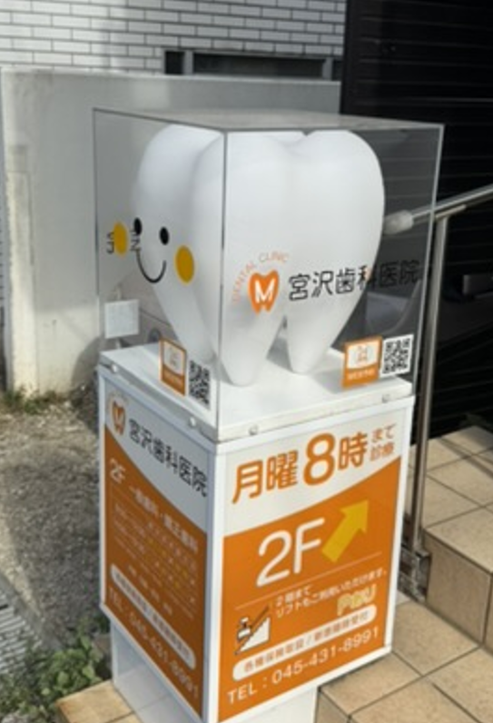

１ 歯医者の看板

この画像は大学に向かうときに通る道にある歯医者の看板で、通学の際に撮影した。
歯医者の名前だけではなく、歯の形をしたオブジェもあることで歯医者であることの強調、
そしてキャラクターのような見た目から愛着が生まれることも考えられる。
歯医者の名前だけではなく、歯の形をしたオブジェもあることで歯医者であることの強調、
そしてキャラクターのような見た目から愛着が生まれることも考えられる。
２ バーの看板

この看板も通学路にあるもので普段はあまり気にすることなく通り過ぎていたが、
改めて観察すると流木のような見た目の独特ないい看板だと感じた。
改めて観察すると流木のような見た目の独特ないい看板だと感じた。
３ 旅館の中にある食事処の看板

この看板は家族で旅行に行ったときに泊まった旅館の食事処で撮ったものだ。
看板としてもいいデザインではあるが、写真の中にある生け花のような飾りもあり、
和の旅館の雰囲気を感じさせている。
看板としてもいいデザインではあるが、写真の中にある生け花のような飾りもあり、
和の旅館の雰囲気を感じさせている。